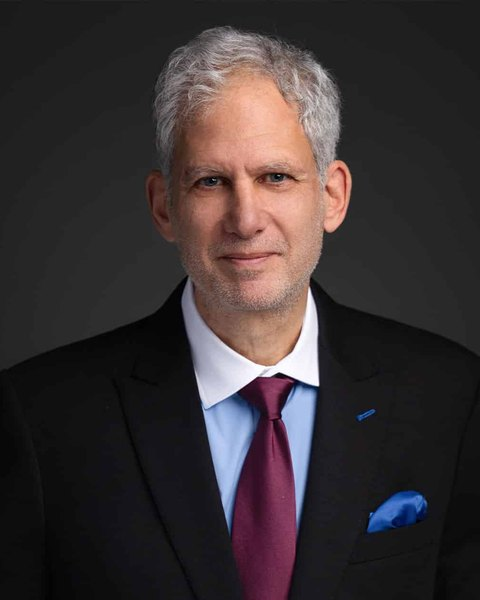

Non-surgical disc, nerve and knee care, from the doctors who built it.
Drs. Eric Kaplan and Perry Bard have certified chiropractors since 2012 at Parker, National and Life University, and co-founded the 250+ DISC Centers of America.


Drs. Eric Kaplan and Perry Bard have certified chiropractors since 2012 at Parker, National and Life University, and co-founded the 250+ DISC Centers of America.
Between them, eleven multi-million-dollar clinics before they ran a single seminar. Partners for more than three decades.
Dr. Eric Kaplan. Co-founder of DISC Centers of America and co-chair of the International Medical Advisory Board on Spinal Decompression.
Dr. Perry Bard. Co-founder of DISC Centers of America. In practice since 1987.
Each has a son in practice: Dr. Jason Kaplan at Wellington Disc Center and Dr. Devin Bard at Palm Beach Disc Center.

The programs started at Parker University in 2012 and moved through National University to Life University, where the protocol is now part of the curriculum.
The programs are reviewed by medical doctors and co-taught with specialists from outside chiropractic.

Neurologist. Co-teaches the neuropathy programs and contributed to The Ultimate Peripheral Neuropathy Book.
Past President of the NBCE, the national board that administers chiropractic board exams, and a Life University trustee.
Duke-trained neurosurgeon and inventor of TENS. A contributor to The Ultimate Spinal Decompression Book.
The International Medical Advisory Board on Spinal Decompression: ten medical doctors and ten chiropractors, including orthopedic surgeons, neurosurgeons and neuroradiologists.
Each program is built around a book they wrote with the specialists who teach alongside them.

Disc
More than 840 pages of interviews and protocols, reviewed by Chiropractic Economics in May 2023.
The disc program
Nerve
Interviews and protocols with neurologist Dr. Jay Lombard.
The nerve program
Knee
The text behind the Non-Surgical Knee Care Certificate at Life University, approved for CE in about 36 states.
The knee programThe decompression book was reviewed by Chiropractic Economics (May 2023) and The American Chiropractor (July 2023). Both doctors have written columns for The American Chiropractor since 2020. The library

Most doctors treat disc, nerve and knee one at a time. The ones who connect them become the go-to doctor in their market.
See the Triad of Patient SuccessNational Spinal Decompression Certification
"Thanks to Dr. Kaplan, Dr. Bard and The Chiro Event, I have been able to finally create the dream practice that I envisioned, and now I am the go-to disc and nerve specialist in my market."
"Love the training, the research, and the way they help me explain things to my patients and overcome objections. That's why I bring my staff with me."
"Better doctor. Better husband. Better father. Better leader."
"It's the greatest profession in the world, but it's not an easy business. So what did Perry and I do? We made it easier."Dr. Eric Kaplan
Saturday, November 21, 2026. Free for chiropractors, based on seat availability. Every request is reviewed.
Request your seatAlready offering decompression? Book a free 30-minute Decompression Program Analysis with both doctors.
Questions about the programs? Call Lacey888-990-9660